00读前一分钟 · 全文脉络（做完题再看也行）
⭐⭐⭐ 这篇评论的骨架是「让步—转折」六连——作者每表一次态，都先替对方说半句好话：
| 位置 | 让（替对方说的） | 转（作者自己的） | 题 |
|---|---|---|---|
| ①❸ | 比去年略低一点 | but 仍远高于 CPI | 21D · 21B 的原料 |
| ② → ③❶ | 整段：谁用谁付 ＋ 东南部受关注太多 | However 他们还挨了罢工 | 22B（答案在「让」这一侧） |
| ③❷ | 运营商吹嘘改进，随他说 | but 乘客理应享受基本服务 | 23C |
| ③❸ → ③❹ | 罢工的责任在工会 | However 受害者理应获赔 | 23A · 23B · 23D 的原料 |
| ④❸ | 没错，需要更多投资 | but 乘客不会无限期多付 | 24B · 24C 的原料 · 25A |
| ④❹ | 国有化的威胁眼下被击退 | but 不平息众怒就会卷土重来 | 24A |
▸ 一根线从头走到尾：「钱」——fares · the cost of travelling · rise · burden（①）→ the cost of investing in and running · borne by · taxpayer · subsidise（②）→ the substantial sums they are now paying · compensation（③）→ investment · pay more（④）——谁付、付多少、付了换来什么。25 题的答案就是这根线的终点：付不下去了（not sustainable）。
▸ 另一根线：「服务」——①只说贵，没说服务；③❷ a basic level of service 第一次出场 → ④❶ minimum service requirement · services can continue to operate → ④❸ cramped, unreliable services——「贵」与「差」两根线在第三段交叉：付了那么多钱（贵），连基本服务都没有（差）——这就是作者的全部论点。
00+读前背景 · 十个专名与事实（常识只帮读，不帮选——你知道英国铁路后来真的大批收归国有，24 题照样只认 ④❹ 那句话）
本篇是《每日电讯报》2020 年 1 月 2 日的评论——刊在涨价生效当天。《电讯报》是右翼报纸，一向亲保守党、亲市场，可这篇照样把运营商骂了一顿：它不是反对私营，而是警告「再不改，国有化就要回来了」。这一点决定了 24、25 两题的方向：国有化在作者眼里是威胁（threat），不是希望——25D Can Nationalisation Bring Hope? 方向就反了。
| 专名 / 事实 | 是什么 | 在本文里的作用 |
|---|---|---|
| The Telegraph（《每日电讯报》） | 英国大报，政治立场偏右、亲保守党；本篇 2020-01-02 刊出（据黄皮书），标题 Passengers Won’t Put Up with Ever-Rising Rail Fares Forever | ⭐⭐⭐ 原刊标题就是 25 题的答案：Won’t Put Up with … Forever ↔ Aren’t Sustainable。本站《电讯报》此前出现在 2020 完形（社论 Hands off our roast potatoes） |
| train operators（火车运营商） | 英国 1990 年代铁路私有化后，客运由私营公司按「特许经营权」（franchise）分线路运营；轨道等基础设施归另一家公共机构 | ①❶ 开篇被质问的对象——全文批评的主角；23 题问的就是它 |
| 2.7% 与「受管制票价」 | 2020-01-02 起票价平均涨 2.7%；约四成票价（如通勤季票）受政府管制，涨幅上限挂钩前一年 7 月的 RPI（2019 年为 2.8%） | ①❸ This year’s rise——行业按 RPI 算是「低于通胀」，作者按 CPI 算是「远高于通胀」（新卡 R294） |
| CPI（消费者价格指数） | 官方通胀指标；英国统计局：2019 年 10 月、11 月 CPI 都是 1.5%（近三年最低） | ①❸ the official CPI measure of inflation——作者挑的参照系；⭐⭐ 21B kept pace with inflation 就是在这里翻车 |
| Lincolnshire（林肯郡） | 英格兰东部的农业郡，地广人稀、老人多、出行靠开车 | ②❷ a car-driving pensioner from Lincolnshire——⭐⭐⭐ 「不坐火车、却要交税」的那一方：general taxpayer 的化身 |
| Surrey（萨里郡） | 伦敦西南的富裕通勤带，大批人每天坐火车进伦敦金融城上班 | ②❷ a stockbroker from Surrey——⭐⭐⭐ 「天天坐火车、而且不缺钱」的那一方：those who use it 的化身。挑「股票经纪人」是为了加一层「凭什么让穷的补贴富的」，职业本身与股票、投资无关（22C 的陷阱） |
| the South East vs the Midlands and the North | 英格兰东南部（伦敦及周边，铁路最密、最贵）vs 中部和北部（铁路老旧，长期抱怨投资偏向伦敦） | ②❸ 对方的第二条理由：东南部的苦处被关注得太多了。⭐ 作者在 ③❶ 用 However, those commuters 把话题拉回东南部——承认北方苦，但东南部的人也刚挨了罢工 |
| rail strikes（铁路罢工） | 2019 年英国多家运营商发生罢工，焦点之一是「列车是否必须配列车员」；年底西南线还有一场持续近一个月的罢工 | ③❶ some of the worst rail strikes in years——⭐⭐ 作者不怪运营商（责任在工会，③❸），只借罢工说明乘客没享受到服务；25B 把它拔成全文主题 |
| minimum service requirement（最低服务要求） | 保守党 2019 年 12 月大选宣言承诺：立法要求交通罢工期间必须维持最低限度的服务；后成为 2023 年《罢工（最低服务水平）法》（2025 年 12 月被废止） | ④❶ The Government has pledged——⭐⭐ 24D collapse of operations 方向反了：这条法律的目的正是「罢工时服务照样运行」 |
| nationalisation（国有化） | 工党 2019 年大选宣言承诺把铁路收归国有；工党败选 ⟹ 威胁「暂时被击退」 | ④❹——⭐⭐⭐ 24A change of ownership 的上位：所有权由私营公司转到国家手里。后见之明：2020 年 3 月北方铁路被政府接管；2024 年《客运铁路服务（公有制）法》让公有运营成为默认——作者的警告应验了，但考题只认原文 |
▸ 该用的：知道 Lincolnshire 是农业郡、Surrey 是通勤带，②❷ 那个反问就读得懂——一个不坐火车、一个天天坐，作者用两个地名就把「纳税人 vs 乘客」画出来了；知道国有化是工党的主张、《电讯报》是右翼，就知道 nationalisation 在这里是威胁而不是出路。
▸ 不该用的：你知道后来真的国有化了，会觉得 25D「国有化能带来希望吗」也说得通——可原文只在末句提了一次、而且是当威胁提的；你知道罢工是工会和运营商在打架，会把 23B「运营商在修复与工会的关系」当成常识选进去——原文一个字没写；你知道票价公式挂 RPI，会觉得 21B「与通胀同步」没错——可作者明确选了 CPI，题干问的是作者。
🔗 跨篇（站内已有篇目）：
▸ 2019 T4《网购销售税》（R262 谁付·谁代收·谁收）：同样是「一笔钱该谁出」——那篇画的是税的箭头，这篇画的是铁路成本的箭头：用的人付 vs 全体纳税人付，22 题就是问这根箭头上的一个人站在哪头。
▸ 2018 T4《美国邮政需要的不只是创可贴》：同样是公共服务、同样是「光涨价／光补贴解决不了，要一揽子改革」——那篇的 band-aid 对应这篇的 a wider package of measures。
▸ 2020 T3《董事会配额》与本篇同属「先替对方把道理说足、再一条条驳」的评论——那篇是「驳」，这篇是「让」：驳是逐条否定，让是先认半句再转。
01原文精读 · 全文四段（本机识别成文字 · 可切回原卷）
📄 原文由你的浏览器从原卷第 3 页识别成文字（每句末尾「原卷」可切回扫描图，「校对」可改错字）｜ 选中任意单词弹「查有道」（触屏长按选词；切回原卷后在扫描图上点词也能查）｜ 每句下方「↘ 跳到长难句精析」按钮跳 03 节 ｜ 虚线词 ＝ 本句重难点词，点开出卡片（正文里没认出来的才留在下面 🟡 行） ｜ 每段「意」= 该段意译（按句意转述，非逐字翻译）
① 事件与作者的第一次表态：运营商又涨价，凭什么？一月涨价已成惯例，压在只能坐火车的人身上；今年比去年略低，仍远高于 CPI
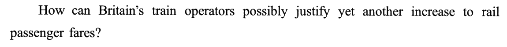
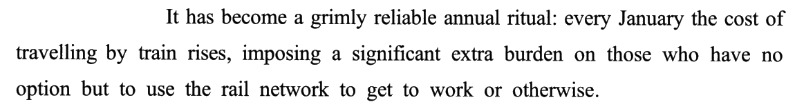
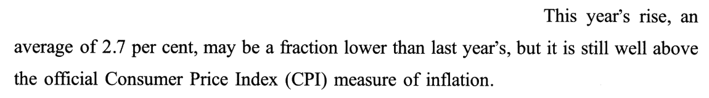
| 句 | 作用 | 信号 | 养活的选项 |
|---|---|---|---|
| ❶ | 质问 | How can … possibly · yet another | 21D ✔ 的态度 |
| ❷ | 定性：惯例 ＋ 负担落在乘客身上 | grimly reliable annual ritual · imposing … burden on those who | 21A（负担挪给运营商）· 21C（惯例 ≠ 意外） |
| ❸ | 举数：让步 ＋ 立场 | may be a fraction lower · but … still well above | 21D ✔（still ↔ remains）· 21B（方向反） |
② 对方的两条理由：谁用铁路谁付钱，而不是全体纳税人；东南部通勤者的苦处受的关注太多
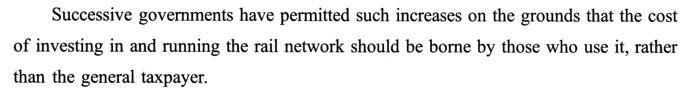
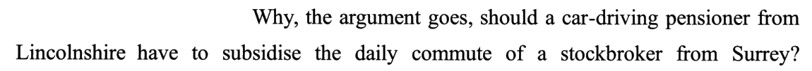
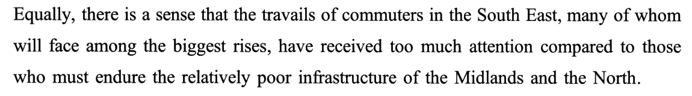
on the grounds that（理由是）· the argument goes（照这种说法）· there is a sense that（有一种看法）——没有一句是作者自己的判断（老卡 R4 先分清谁在说话、R163 视角框）。作者的立场要等到第三段 However 才回来。⭐⭐⭐ 22 题：例子里的两个人，按「付钱 ／ 坐车」两格对号：
| ②❶ 原则的两格 | ②❷ 例子里的人 | 他在句子里的位置 | 选项 |
|---|---|---|---|
| the general taxpayer（全体纳税人） | 开车的林肯郡退休老人 | subsidise 的主语——出钱的 | 22A car drivers · 22D ordinary taxpayers |
| those who use it（用铁路的人） | 萨里郡的股票经纪人 | the daily commute of 的定语——坐车的 | 22B rail travellers ✔ |
⭐ ②❸ 的 those commuters 在下一段被原样接住：③❶
However, … those commuters——作者承认北方苦，但把镜头拉回东南部：他们也刚挨了多年来最狠的罢工。③ 作者的反驳：这些通勤者刚挨了多年来最严重的罢工；运营商吹嘘改进随他去，乘客付了大钱理应享受基本服务；罢工怪工会，但受害者理应获赔
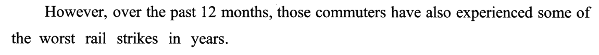
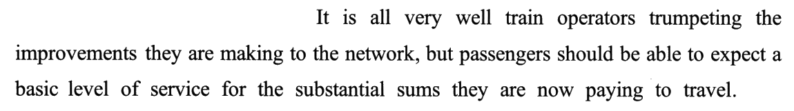
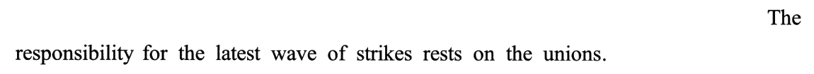
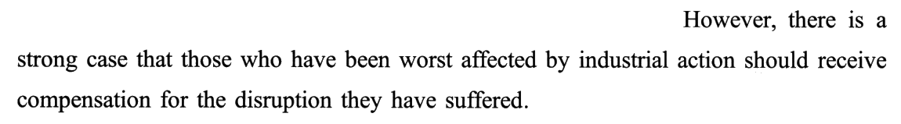
| 句 | 让（作者暂且认的） | 转（作者主张的） | 23 题 |
|---|---|---|---|
| ❷ | 运营商吹嘘改进（It is all very well） | 乘客理应享受基本服务（should be able to expect） | C ✔（应然 ⟹ 实然没做到） |
| ❸ → ❹ | 罢工的责任在工会 | 受害最深的人理应获赔（should receive） | A（应然当事实）· B（工会只一句、无「修复关系」）· D（受损的是乘客） |
⚠️ 本段两次 However（❶、❹）方向不同：❶ 驳的是第二段的对方，❹ 驳的是作者自己 ❸ 刚让出去的那半步——同一个词，一个是段间转折、一个是句间转折。
④ 对策与警告：最低服务立法只是一揽子措施的一部分；要投资没错，但服务这么差乘客不会无限期多付；国有化的威胁暂时被击退，不平息众怒就会更猛烈地回来
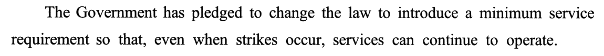
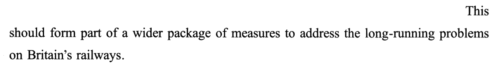
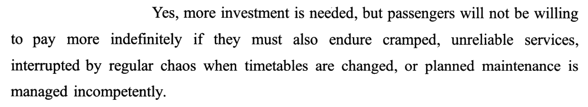
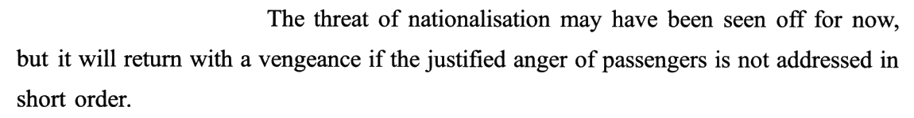
| 句 | 作用 | 信号 | 养活的选项 |
|---|---|---|---|
| ❶ | 政府的对策 | has pledged · so that, even when | 24D（方向反：罢工时照常运行） |
| ❷ | 作者评价：不够 | should form part of a wider package | —— |
| ❸ | 底线：乘客不会一直多付 | Yes, … but · not … indefinitely | 25A ✔ · 24B（不多付 ≠ 收入减少）· 24C（需要投资 ≠ 投资损失） |
| ❹ | 警告：国有化会回来 | may … for now, but … if | 24A ✔ · 25D（威胁当希望） |
if the justified anger of passengers is not addressed（calm down ↔ address the anger），它的主句是 it will return with a vengeance，it 回指 The threat of nationalisation；nationalisation 本身就是「所有权由私转公」⟹ 上位一层 ＝ a change of ownership（新卡 R297，老卡 R5 沿因果链走到末端）。⚠️ justified anger「正当的愤怒」——作者给乘客的愤怒盖了章：合理的。⟹ 25C Constant Complaining Doesn’t Work（无休止的抱怨没用）把矛头转向乘客，与作者给乘客的定性正好相反（老卡 R18：作者站没站队看末段给了谁）。
02题目与解析（点选项即判 · 再看解析）
十五个干扰项分九族：方向反 4（21B 与通胀同步 · 21C 意外 · 24D 运营瘫痪 · 25C 怪乘客抱怨）· 挪对象 2（21A 负担挪给运营商 · 23D 损失挪给运营商）· 站错边 2（22A · 22D——例子里出钱的那一方）· 局部当全文 2（25B 罢工 · 25D 国有化）· 应然当实然 1（23A 理应赔 → 正在赔）· 无中生有 1（23B 修复与工会的关系）· 词面联想 1（22C stockbroker → investors）· 偷换程度 1（24B 不多付 → 收入减少）· 原词拼接 1（24C investment ＋ loss）。方向反一族独大——这篇评论每表一次态都先让一步，让的那半句正好是方向相反的现成原料。
⭐ 本篇最该练的是「让」：全文「让步—转折」六连，21 让幅度不让性质（比去年低 vs 比 CPI 高）· 22 答案就在让的那一侧（对方的道理里，经纪人站在「用铁路的人」那格）· 23 让了自夸、转出应然（It is all very well … but should）· 24 让了「眼下」、转出「将来」（for now, but will return）· 25 让了投资、转出底线（Yes, … but not indefinitely）。2020 T4 是五个「时」，2021 T1 是五个「让」。
作者观点（今年的涨价）21. The author holds that this year’s increase in rail passenger fares
正源：①❶ How can … possibly justify（反问：说不过去）＋ ①❸ but it is still well above（让步后的立场）
▸ 第一步：题干问 The author holds——作者观点题，只取作者的判断，不取事实层的描述；
▸ 第二步：找作者的判断——①❶ 反问（怎么可能自圆其说）＋ ❸ 的 but 后（仍远高于 CPI）——❸ 的 may be a fraction lower 是让步，让的是幅度（比去年少涨一点），不让性质（还是涨多了）；
▸ 第三步：对词——still ↔ remains、How can … possibly justify ↔ unreasonable ⟹ D（新卡 R294，老卡 R85 反问看后一句、R289 让步只让半步）。
黄皮书技巧栏（要点转述）：本题就首段命制作者观点题，文中并未明示作者态度，需从字里行间提炼——How can … possibly 以反问传达质疑，yet another、a grimly reliable annual ritual、imposing a significant extra burden、well above … CPI 强调涨价频繁、涨幅过大，由此推知作者认为今年的涨价并不合理。
imposing a significant extra burden on those who——负担压在乘客（those who have no option but to use the rail network）身上，A 把它换成「减轻运营商的负担」：承受者换了，方向也换了（加重 → 减轻）。原文一个字没谈运营商的成本压力（黄皮书：这两句只表明票价上涨给通勤者带来负担，并未提及减轻运营商负担）。[B] has kept pace with inflation ⚠️ 方向反（换参照系）：← ①❸
well above the official CPI measure of inflation——原文是「远高于」，B 是「同步」。⭐⭐ 这个选项的毒在背景里：受管制票价按 RPI（2.8%）封顶，行业确实说 2.7%「低于通胀」——可作者挑的参照系是 CPI（1.5%），题干问的是作者（新卡 R294）。[C] is a big surprise to commuters ⚠️ 方向反 ＋ 换说话人：← ①❷
a grimly reliable annual ritual——「准得叫人泄气的年度惯例」，正说明谁都料得到（黄皮书：通勤者显然对今年的涨价不会感到陌生或意外）。⭐ 更硬的判据：题干问 The author holds，C 却写乘客的反应——不满是作者的、惊讶是乘客的，主体先就不对（老卡 R21 主体校验）。[D] remains an unreasonable measure ✔ ①❶ 反问的「说不过去」＋ ①❸ but 后的 still well above。
写作目的（例子代表谁）22. The stockbroker in Paragraph 2 is used to stand for
正源：②❶ borne by those who use it, rather than the general taxpayer ＋ ②❷ subsidise the daily commute of a stockbroker
▸ 第一步：例子找它服务的那句——②❷ 有插入语 the argument goes，说明它是对 ②❶ 那条道理的具体说明（黄皮书：逻辑路标 the argument goes ⟹ 两句为解题范围）；
▸ 第二步：把原则拆成两格——
borne by A rather than B：A ＝ 用铁路的人（该付）、B ＝ 全体纳税人（不该付）；▸ 第三步：按句法位置对号——
Why should P have to subsidise the daily commute of S?：P（开车的退休老人）是出钱的，对 B；S（股票经纪人）是每天通勤坐火车的，对 A ⟹ rail travellers（新卡 R295，老卡 R3 例子服务观点、R262 画钱的箭头）。黄皮书技巧栏（要点转述）：本题就第二段的例子命制写作目的题，关键在梳理句间逻辑、找到例子服务的论点句。先由 stockbroker 定位到 ②句，由 the argument goes 确定这两句为解题范围；再根据 ①句的取舍结构 should be borne by … rather than … 和 ②句的对比关系，可知股票经纪人代表「火车乘客」，驾车出行的退休者代表「不乘火车者」，两个群体合为「全体纳税人」。
a car-driving pensioner——开车的是退休老人，他和经纪人是反问里对立的两端（非火车乘客 vs 火车乘客）。[B] rail travellers ✔ ②❶ those who use it ＋ ②❷ daily commute。
[C] local investors ⚠️ 词面联想 ＋ 原词拼接：← stockbroker（股票 → 投资）＋ ②❶
the cost of investing in。经纪人的职业只是加一层「穷的补贴富的」的反差，与本题无关；②❶ 的 investing in 说的是铁路网的投资成本，不是什么「当地投资者」（黄皮书：全句并未提及当地投资者）（老卡 R39）。[D] ordinary taxpayers ⚠️ 站错边：← ②❶
the general taxpayer——纳税人是不该付钱的那一格，由开车的退休老人代表；经纪人当然也纳税，但在这个反问里他站的是「被补贴的乘客」那一格（黄皮书：其与开车出行的领养老金者所代表的「不使用铁路的普通纳税人」相对）。
事实推理（运营商：暗示）23. It is indicated in Paragraph 3 that train operators
正源：③❷ It is all very well … but passengers should be able to expect a basic level of service
▸ 第一步：题干 It is indicated——「暗示」：答案不会照写，要从原文推一步；
▸ 第二步：拆 It is all very well X, but Y——X（运营商吹嘘改进）被作者打了折，Y 才是作者的话：乘客理应能享受基本服务；
▸ 第三步：应然反推实然——「理应能享受到」⟹ 现在享受不到 ⟹ 运营商没提供合格的服务（basic level ↔ adequate）⟹ C（新卡 R296，老卡 R185 应然与实然的缺口）。
黄皮书技巧栏（要点转述）：It is indicated … 提示考查文中事实，往往需要一定推理。难点在于本段并未直接描述运营商的行为，而是用两重「让步—转折」表明作者观点（虽然……但理应……）；要关注转折之后，从「理应如何」反推「实则怎样」——运营商未能提供基本服务、也没有补偿乘客。其余选项或偏离主线，或把「理应情形」当作「事实信息」。
should receive compensation——「理应获赔」是作者的主张，恰恰暗示乘客还没拿到赔偿；A 写成运营商「正在赔」，把应然变成了正在发生的事实（黄皮书：should receive compensation 暗示了乘客尚未获得赔偿）。[B] are trying to repair relations with the unions ⚠️ 无中生有：← ③❸
rests on the unions——原文只有一句「罢工的责任在工会」，没提运营商与工会的关系、更没提修复（黄皮书：原文并未提及）。[C] have failed to provide an adequate service ✔ ③❷ should be able to expect a basic level of service 的反推。
[D] have suffered huge losses owing to the strikes ⚠️ 挪对象（受损者）：← ③❶
the worst rail strikes ＋ ③❹ those who have been worst affected——worst affected 回指 ❶ 的通勤者，受损的是乘客；运营商的损失原文一个字没提（黄皮书：④句的 those … 回指①句中的「通勤者」）。
条件后果（若不平息众怒）24. If unable to calm down passengers, the railways may have to face
正源：④❹ The threat of nationalisation … will return with a vengeance if …
▸ 第一步：if 对 if——题干的条件只对得上 ④❹ 的 if 从句：calm down passengers ↔ address the justified anger of passengers；
▸ 第二步：结果取主句——it will return with a vengeance，it 回指句首的 The threat of nationalisation；
▸ 第三步：专名升上位——nationalisation ＝ 私营转国有 ＝ 所有权变更 ⟹ a change of ownership ⟹ A（新卡 R297，老卡 R5 沿因果链走到末端）。
黄皮书技巧栏（要点转述）：本题是广义的因果细节题，考「条件—结果」关联；难点在于各选项在文中均有涉及、表面都有道理。关键在顺藤摸瓜找到运营商面临的最终结果——先由题干定位到 if the justified anger … not addressed 所在句，再逐层拆解：不安抚乘客 → 将再次面临国有化的威胁（it 指代 The threat of nationalisation）⟹ A。
[B] a reduction of revenue ⚠️ 偷换程度：← ④❸
will not be willing to pay more indefinitely——「不肯无限期地再多付」是涨不上去，不是收入掉下来；何况铁路对通勤者是刚需（黄皮书：该句并不意味着通勤者改用其他交通方式、使铁路公司收益减少）（老卡 R8）。[C] the loss of investment ⚠️ 原词拼接（方向反）：← ④❸
more investment is needed——原文说铁路需要更多投资，C 拼成「失去投资」；这句还在 Yes 的让步那一半里，不是结果（黄皮书：无关外界对铁路的投资，文中也未提及投资损失）（老卡 R39）。[D] the collapse of operations ⚠️ 方向反：← ④❶
services can continue to operate——最低服务要求的目的正是罢工时照常运行，D 把 operate 拼成了「运营瘫痪」（黄皮书：铁路将因政府的举措得以顺畅运营，而非面临瘫痪）。
最佳标题25. Which of the following would be the best title for the text?
正源：①❶ yet another increase to rail passenger fares（中心词）＋ ④❸ will not be willing to pay more indefinitely（方向）
▸ 第一步：中心词查覆盖——票价上涨从 ① 走到 ④（increase · rise · such increases · substantial sums · pay more），罢工只在 ③、国有化只在 ④❹、抱怨一词没有 ⟹ 先留 A；
▸ 第二步：方向查作者——开篇反问（说不过去）＋ ④❸ 不会无限期多付 ⟹「撑不下去」＝ Aren’t Sustainable；
▸ 第三步：对原刊标题——Passengers Won’t Put Up with Ever-Rising Rail Fares Forever：Ever-Rising Fares 原样保留，Won’t … Forever ↔ Aren’t Sustainable ⟹ A（老卡 R40 标题三查、R218 贯穿首尾的那根线）。
黄皮书技巧栏（要点转述）：可分两步——① 判断各项中心词是否为全文论述中心（Ever-rising Fares、the Strikes、Constant Complaining、Nationalisation），文中 yet another increase、the cost … rises、This year’s rise、pay more 表明「票价上涨」是中心，初选 A；② 验证描述是否符合作者方向：开篇反问 ＋ 末段 will not be willing to pay more 亮明反对态度，Aren’t Sustainable 恰好体现。另可反推：若以 B／C／D 为题，文章该写什么——都与本文不符。
[B] Who Are to Blame for the Strikes? ⚠️ 局部当全文：← ③❶ rail strikes ＋ ③❸ rests on the unions——罢工只在第三段，作者借它说乘客没享受到服务；谁该负责，作者一句话就答了（工会），根本不是要讨论的问题（黄皮书：作者实则借罢工说明乘客获得的服务之差）。
[C] Constant Complaining Doesn’t Work ⚠️ 方向反（矛头转向乘客）：← ④❹
the justified anger of passengers——作者给乘客的愤怒定性为正当的，还警告「不平息就要出事」；C 说「抱怨没用」，等于站到了乘客的对面（黄皮书：与作者认为乘客抱怨合情合理的整体立场不符）（老卡 R18）。[D] Can Nationalisation Bring Hope? ⚠️ 局部当全文 ＋ 方向反：← ④❹
The threat of nationalisation——全文只在末句提一次，而且是当威胁提的；D 把它拔成全文主题、还换成「希望」（黄皮书：末句意在警告、敦促运营商改变，而非探讨国有化是否可行）。
02+专栏 · 两个参照系：21 题——①❸ 同一个 2.7%，比「去年」是低了一点（让步），比「CPI」是高了一大截（立场）；作者挑哪个参照系，哪个就是他的判断。背景里还藏着第三个参照系 RPI：按它算，行业说票价「低于通胀」——21B kept pace with inflation 在别人的尺子上几乎成立，在作者的尺子上是反的
| 参照系 | 数字 | 2.7% 跟它比 | 谁在用 | 21 题 |
|---|---|---|---|---|
| 去年的涨幅 | 2019 年 1 月平均 3.1% | 略低（a fraction lower） | 作者——让步（may be） | 没有选项取它 |
| RPI（零售价格指数） | 2019 年 7 月 2.8% | 略低 | 行业协会、政府的票价公式 | B kept pace 的「背景毒」 |
| CPI（官方消费者价格指数） | 2019 年 10–11 月 1.5% | 远高于（well above） | 作者——立场（but … still） | D remains unreasonable ✔ |
may be a fraction lower than …, but it is still well above …——may 后面认一个对自己不利的比较（比去年少涨了），but 后面换一个对自己有利的比较（比通胀多涨了）。作者观点题只认 but 后的那个参照系，还要认出 still（仍然）——它把「今年」和「往年」焊在一起：往年不合理，今年仍然不合理 ⟹ remains（新卡 R294）。▸ 怎么用在考场上：读到一个数字被拿来比两次（than A … but … than B），在卷边写两个箭头「A ↓」「B ↑」，圈出 but 后那个；选项里凡是方向与它相反的（同步、低于、改善），一律划掉。
▸ 数字本身不说话，作者选哪个参照系才说话——2019 年英国就有人批评票价公式挂 RPI 而不挂更常用的 CPI，作者这句话正是站在批评者一边（老卡 R158 数字句三件套：比较对象先画时间线）。
📌 2019 年 1 月涨 3.1%、RPI 2.8%、CPI 1.5% 三个数都是背景核查所得，考卷里只有 2.7% 一个数——考场上不需要它们，只需要认出 but 后的 CPI。
02++专栏 · 例子里的人按句法位置对号：22 题「The stockbroker in Paragraph 2 is used to stand for ___」——全站第一次出现 stand for 题干。②❷ 的反问里站着两个人：谁做 subsidise 的主语（出钱：开车的退休老人），谁做 commute of 的定语（坐车：股票经纪人）；再往上对 ②❶ 的原则两格（those who use it ／ the general taxpayer），经纪人就落在「用铁路的人」那格。他的职业是噪音——C 被 stock 骗去了 investors
| 层 | 出钱的一格 | 坐车的一格 |
|---|---|---|
| ②❶ 原则（rather than 两边） | the general taxpayer（不该付） | those who use it（该付） |
| ②❷ 反问的句法位置 | Why should P have to subsidise——主语 P | the daily commute of S——定语 S |
| ②❷ 例子里的人 | a car-driving pensioner from Lincolnshire | a stockbroker from Surrey |
| 人物身上的修饰语 | car-driving（不坐火车）· pensioner（靠养老金，不富）· 农业郡 | daily commute（天天坐）· stockbroker（富）· 通勤带 |
| 22 题选项 | A car drivers · D ordinary taxpayers | B rail travellers ✔ |
▸ 修饰语是作者的「加料」：car-driving 交代他不坐火车、pensioner 交代他不富、daily commute 交代对方天天坐、stockbroker 交代对方很富——作者用三组反差把「凭什么穷的补贴富的」说得很刺耳，可这是政府那一方的说法（the argument goes），作者并不认同（③ However）。
▸ C local investors 是怎么造出来的：stockbroker → stock → invest，再从 ②❶ 摘一个
investing in 当证据——两个原料都在原文，组合是编的（老卡 R39 原词拼接）。▸ 🔗 2012 T4《公共部门工会的膨胀》：represent 的词卡里写过「代表者本人不必是被代表的那一类人」——本题反过来：例子里的人本人就是被代表的那一类人（经纪人自己就天天坐火车），只是作者给他加了一层富人的身份。
▸ 🔗 2019 T4（R262 谁付·谁代收·谁收）：画钱的箭头——退休老人 → 补贴 → 经纪人的通勤。22 题就是问这根箭头的终点站着谁。
02+++专栏 · 应然句反推实然：23 题「It is indicated in Paragraph 3 that train operators ___」——第三段一句没写运营商做了什么，只写了两个 should：乘客「理应能享受基本服务」、受害者「理应获赔」。should 的背面就是实然的缺口：没有基本服务（C ✔）、没有赔偿（A 正好写反）。It is all very well X, but Y 再给 X 打一层折：运营商吹的改进，作者不买账
| 原文的应然句 | 反推出的实然 | 对应选项 |
|---|---|---|
③❷ should be able to expect a basic level of service | 现在连基本服务都没有 | 23C have failed to provide an adequate service ✔ |
③❹ should receive compensation | 现在还没赔 | 23A are offering compensation（写反） |
④❷ should form part of a wider package | 光立法还不够 | ——（不在本题范围） |
▸ It is all very well X, but Y：英式口语里常见的「X 固然好得很，可是……」——X 往往是对方的自夸或空话，very well 是反讽的客气；态度只在 but 后。全站第一次出现这个句式。
▸ 本段还藏着一个「让」：③❸ 罢工的责任在工会——作者替运营商开脱了罢工这一项。可开脱了罢工，不等于开脱了服务：23C 说的是服务不合格，不是「罢工是运营商的错」，所以 ③❸ 不推翻 C。
▸ 🔗 老卡 R185（原则与划线：concern 的答案在应然与实然的缺口里）、R131（先写下作者的「应然」一句话）。
02++++专栏 · if 对 if：24 题「If unable to calm down passengers, the railways may have to face ___」——第四段有两个 if：④❸ 的 if 是「服务若还这么差」，它的结果是「乘客不会无限期多付」；④❹ 的 if 是「众怒若不尽快平息」，它的结果是「国有化的威胁卷土重来」。题干的条件只对得上第二个 if ⟹ 结果取它的主句 ⟹ A change of ownership；B「收入减少」是第一个 if 的结果、还被偷换了程度
| 句 | 条件（if） | 结果（主句） | 24 题 |
|---|---|---|---|
| ④❶ | even when strikes occur（让步条件） | services can continue to operate | D collapse（方向反） |
| ④❸ | if they must also endure 拥挤、不准点、一团乱 | will not be willing to pay more indefinitely | B reduction of revenue（错配 ＋ 偷换程度） |
| ④❹ | if the justified anger of passengers is not addressed | it（the threat of nationalisation）will return | A change of ownership ✔ |
▸ 代词回指：it will return 的 it ＝ 句首的 The threat of nationalisation——may have been seen off for now（眼下被击退）与 will return（会回来）是同一个主语的两个时段，for now, but 又是一个「让」。
▸ 专名升上位：nationalisation（收归国有）在选项里不会原样出现，要往上走一层——所有权从私人公司变到国家 ⟹ a change of ownership。同理：privatisation 也是 change of ownership、merger 是 change of ownership（老卡 R1 同义替换的上位版）。
▸ B 的两层错：① 它是 ④❸ 那个 if 的结果，配错了条件；② 就算配对了，not willing to pay more（不肯再多付）≠ reduction of revenue（收入减少）——涨不上去不等于掉下来（老卡 R8）。
02+++++专栏 · 标题覆盖表：25 题——「票价上涨」从第一段走到第四段，罢工只在第三段，国有化只在末句，抱怨一词没有；方向上作者给乘客的怒气盖了「正当」的章，只有 A 的 Aren’t Sustainable 与作者同向。原刊标题 Passengers Won’t Put Up with Ever-Rising Rail Fares Forever 和 A 只差一个说法
| 选项中心词 | ① | ② | ③ | ④ | 方向 |
|---|---|---|---|---|---|
| A Ever-rising Fares | ✔ increase · rise | ✔ such increases · borne by | ✔ substantial sums | ✔ pay more | Aren’t Sustainable ↔ not … indefinitely ✔ |
| B the Strikes | — | — | ✔ strikes · unions | △ strikes occur（附带） | 谁该负责：作者一句话答完（工会） |
| C Constant Complaining | — | — | — | △ anger（正当的） | ✘ 作者认可乘客的怒气 |
| D Nationalisation | — | — | — | △ 末句一次 | ✘ 是威胁不是希望 |
▸ A 的两个词各对一个位置：Ever-rising ↔ ①❶ yet another（又一次）＋ ①❷ annual ritual（年年如此）；Aren’t Sustainable ↔ ④❸ not … indefinitely（不会无限期）——一个在首段，一个在末段，正好首尾两头。
▸ C 的陷阱最隐蔽：Constant 对上 annual ritual 的「年年」，Complaining 对上 anger——可作者站在抱怨者一边（justified anger），说「抱怨没用」就是站到了对面。标题的方向错，比覆盖错更难看出来。
▸ B、D 是问句标题：问句标题适合「探讨型」文章；本篇是有明确立场的评论，问句标题天然就偏了文体（老卡 R92：文体对不对）。
02++++++专栏 · 十五个干扰项的产地总账 ＋ 同序检查
| 族 | 数 | 选项 | 产地 |
|---|---|---|---|
| 方向反 | 4 | 21B · 21C · 24D · 25C | ①❸ well above → 同步 · ①❷ ritual → 意外 · ④❶ continue to operate → 瘫痪 · ④❹ justified anger → 抱怨没用 |
| 挪对象 | 2 | 21A · 23D | 负担从乘客挪给运营商 · 受损从乘客挪给运营商 |
| 站错边 | 2 | 22A · 22D | 例子里出钱的那一格 |
| 局部当全文 | 2 | 25B · 25D | ③ 的罢工 · ④❹ 的国有化 |
| 应然当实然 | 1 | 23A | ③❹ should receive compensation |
| 无中生有 | 1 | 23B | ③❸ unions 一词 |
| 词面联想 | 1 | 22C | stockbroker → investors ＋ ②❶ investing in |
| 偷换程度 | 1 | 24B | ④❸ not … pay more（还配错了 if） |
| 原词拼接 | 1 | 24C | ④❸ more investment is needed |
▸ 同序检查：完美同序——21 ①段 · 22 ②段 · 23 ③段 · 24 ④段 · 25 全文。一段一题，题号就是段号；做题时可以读一段做一题。
▸ 四个「作者站哪」的题全在转折之后（21 but · 23 but · 24 but · 25 but），只有 22 的答案在让的那一侧——因为 22 问的是例子在对方论证里代表谁，不问作者认不认。⟹ 先认题型再找位置：问作者 → 去转折后；问例子／对方 → 去让步里。
▸ 2019 T1 认 → T2 分 → T3 档 → T4 谁 → 2020 T1 归 → T2 账 → T3 驳 → T4 时 → 2021 T1 让。
03长难句精析 · 13 句（全文 14 句，只跳过 ③❸ 一句 12 词短陈述）
本篇 14 句 388 词，平均 27.7 词一句（2020 T1 是 28.9）；超过 30 词的 6 句（最长 ②❸ 44 词）。句条是原卷扫描，分析里只引短语。这篇的句子长在「挂」——主干往往很短，后面挂一串东西，分四种：① 分词挂结果（①❷ imposing a significant extra burden · ④❸ interrupted by regular chaos）· ② 从句套从句（②❸ that 从句里再套 many of whom · ③❷ but 后的 they are now paying 省略关系词 · ④❶ so that 里插 even when）· ③ 插入语把话挂到别人名下（②❷ the argument goes · ①❸ an average of 2.7 per cent）· ④ 让步句式成对出现（may … but · It is all very well … but · Yes, … but · for now, but）。读法：先找主干，再给每一挂贴标签——结果、原因、条件、让步。
- 主干：
How can operators justify another increase?——特殊疑问句，情态动词 can 提前；主语 Britain’s train operators。 - possibly：放在 can 与动词之间，在疑问句里加重「到底怎么可能」的语气——How can you possibly … ＝「你怎么可能……」，预设答案是「不可能」。
- yet another：「又一个」，带厌烦；yet 在这里不是「然而」，是强调「还有、再」。
- increase to fares：介词用 to（加到票价上），也常说 increase in fares——题干 21 就改成了 increase in rail passenger fares。
- 冒号前：
It has become a … ritual——It 指「涨票价这件事」；grimly reliable「可靠得叫人泄气」：褒义的 reliable 被 grimly 扭成反讽。 - 冒号后（解释 ritual）：
every January the cost … rises——主语 the cost of travelling by train，谓语 rises（不及物）。 - 分词结果状语：
imposing a significant extra burden on those who …——impose X on Y「把 X 强加给 Y」；负担的承受者是 those，后面 who 定语从句说明是哪些人。 - 定语从句里的固定结构：
have no option but to use「别无选择只能用」；to get to work or otherwise——otherwise 在这里是「或其他用途」（上班或别的事），不是「否则」。
- 主干一：
This year’s rise … may be a fraction lower than last year’s——may 让步；a fraction「一点点」修饰比较级 lower；last year’s 后省略 rise。 - 同位语：
an average of 2.7 per cent——用逗号夹在主谓之间，补充涨幅数字。 - 主干二：
but it is still well above the … measure of inflation——well 修饰介词 above「远高于」；measure 是「衡量标准、指标」不是「措施」。
- 主干：
Successive governments have permitted such increases——successive「接连的、历届的」；such increases 回指第一段的涨价。 - 原因状语：
on the grounds that …「理由是……」——引出的是政府的理由，后面 that 是同位语从句。 - 同位语从句：
the cost … should be borne by those who use it（主谓）＋rather than the general taxpayer（对比）——investing in 与 running 共用宾语 the rail network；borne 是 bear 的过去分词，be borne by「由……承担」；rather than 连接两个 by 的宾语（those who use it ／ the general taxpayer）。
- 主干：
Why should a pensioner have to subsidise the commute of a stockbroker?——should 提前的特殊疑问句；have to「不得不」。 - 插入语：
the argument goes——「这种论点是这么说的」，把整句挂到上一句政府的论点名下；不是作者在问，是在转述对方的反问。 - 两个人物各带地名：
a car-driving pensioner from Lincolnshire（前置复合形容词 car-driving ＋ 后置介词短语）·a stockbroker from Surrey。 - commute 作名词：「通勤（路程）」；daily commute ＝ 每天上下班的往返。
- 主干：
there is a sense that …「有一种看法认为……」——that 引导同位语从句解释 sense。 - 同位语从句的主干：
the travails … have received too much attention——主语中心是复数 travails（艰辛、苦处），所以谓语用 have received。 - 插在主谓之间的非限定定语从句：
many of whom will face among the biggest rises——whom 指 commuters；face among the biggest rises「面临最大之列的涨幅」。 - 比较状语：
compared to those who must endure …（中部和北部那些忍受落后基础设施的人）——those 指「那些人的苦处」（承前省略），who 定语从句。
- 主干：
those commuters have also experienced some of the worst rail strikes in years——现在完成时配 over the past 12 months。 - 句首双状语：
However（转折）＋over the past 12 months（时间）。 - in years：「多年来」——the worst … in years ＝ 多年来最糟的。
- 句式：
It is all very well (for) X doing …, but …——「X 做……固然好得很，可是……」；这里 train operators trumpeting … 是动名词复合结构作真主语（It 形式主语）。 - trumpet 作动词：「大肆宣扬、吹嘘」；
the improvements they are making to the network——they 前省略关系代词 that。 - but 后主干：
passengers should be able to expect a basic level of service——should 应然 ＋ be able to「能够」。 - for 短语：
for the substantial sums they are now paying to travel——for 表「交换、作为代价」；sums 前 substantial「大量的」；they 前再省略一个关系代词。
- 主干：
there is a strong case that …「完全有理由认为……」——case 是「论据、理由」，不是「案例」；that 同位语从句。 - 从句主干：
those … should receive compensation for the disruption——those 后面 who 定语从句；disruption 后面又是省略关系词的定语从句 they have suffered。 - industrial action：「劳资纠纷行动」＝ 罢工、怠工的正式说法。
- 主干：
The Government has pledged to change the law——pledge to do「承诺做」。 - 目的不定式：
to introduce a minimum service requirement——修饰 change the law 的目的。 - 目的状语从句：
so that … services can continue to operate——中间插入让步状语从句even when strikes occur，两个逗号夹住。
- 主干：
This should form part of a wider package of measures——This 回指上一句的修法承诺；form part of「构成……的一部分」。 - 不定式定语：
to address the long-running problems on Britain’s railways——address「解决、处理」；long-running「长期存在的」。
- 让步：
Yes, more investment is needed——Yes 在书面语里表示「没错、我承认」。 - 转折主干：
but passengers will not be willing to pay more indefinitely——indefinitely「无限期地」。 - 条件从句：
if they must also endure cramped, unreliable services——endure 的宾语是 services，前面两个形容词。 - 挂在 services 后的过去分词短语：
interrupted by regular chaos when …, or (when) planned maintenance is managed incompetently——两个 when 从句由 or 并列，第二个 when 承前省略。
- 让步主干：
The threat of nationalisation may have been seen off for now——may have been done 对过去的推测（被动）；see off「击退、挫败」；for now「眼下、暂时」。 - 转折主干：
but it will return with a vengeance——it ＝ the threat of nationalisation；with a vengeance「变本加厉地、更猛烈地」。 - 条件从句：
if the justified anger of passengers is not addressed in short order——address 「处理、平息」；in short order「立即、迅速」。
03+熟词僻义清算表 · 42 处
生词不多（travails、stockbroker、pensioner、cramped、vengeance），真正会让你读错的是熟词进了「英国铁路 ＋ 劳资 ＋ 政论」这个场子换了义项，分三族：① 铁路行话（operator 是「运营商」不是「接线员」、fare 是「票价」不是「公平」、commute 是「通勤」不是「减刑」、service 是「列车班次」、run 是「运营」）· ② 劳资行话（industrial action 是「罢工」不是「工业行动」、the unions 是「工会」、case 是「理由」不是「案例」）· ③ 政论口语（the argument goes「照这种说法」、It is all very well「那倒也罢了」、see off「击退」、with a vengeance「变本加厉」、in short order「立刻」、Yes 是「没错」）。
| 词 / 短语 | 你以为 | 本篇的意思 | 出处与作用 |
|---|---|---|---|
operator | 接线员、操作员 | 运营商（train operators 火车运营公司） | ①❶ ③❷——全文批评的主角 ⭐⭐⭐ |
fare | （fair）公平 | 车费、票价 | ①❶ rail passenger fares ⭐⭐ |
yet | 然而；还没 | 再、又（yet another 又一个） | ①❶ ⭐⭐ |
possibly | 可能地 | （疑问句中加强语气）到底、究竟 | ①❶ How can … possibly justify ⭐⭐ |
reliable | 可靠的（褒） | （被 grimly 扭成反讽）准得叫人泄气 | ①❷ grimly reliable ⭐⭐ |
ritual | 宗教仪式 | 惯例、老一套 | ①❷ annual ritual——21C 的反证 ⭐⭐ |
otherwise | 否则 | 其他方面、别的用途（to work or otherwise） | ①❷ ⭐⭐ |
a fraction | 分数 | 一点点（修饰比较级） | ①❸ a fraction lower ⭐⭐ |
well | 好 | 远远、大大（修饰介词 above） | ①❸ well above ⭐⭐ |
measure | 措施 | 指标、衡量标准（measure of inflation） | ①❸ ⭐⭐——④❷ measures 才是「措施」 |
successive | 成功的（successful） | 接连的、历届的 | ②❶ Successive governments ⭐⭐⭐ |
grounds | 地面；场地 | 理由（on the grounds that） | ②❶ ⭐⭐ |
run | 跑 | 运营、经营 | ②❶ running the rail network ⭐⭐ |
borne | 出生（born） | 承担（bear 的过去分词） | ②❶ be borne by ⭐⭐⭐ |
argument | 争吵 | 论点、说法（the argument goes 照这种说法） | ②❷——把整句挂到政府名下 ⭐⭐⭐ |
go | 去 | （话、说法）是这样说的（as the saying goes） | ②❷ the argument goes ⭐⭐ |
commute | 减刑；交换 | 通勤（n.，每天上下班的往返） | ②❷ the daily commute ⭐⭐⭐ |
equally | 相等地 | 同样地、此外（句首连接副词） | ②❸ ⭐⭐ |
sense | 感觉；意义 | 看法、普遍的印象（there is a sense that） | ②❸ ⭐⭐ |
face | 脸 | 面临（v.） | ②❸ will face among the biggest rises · 24 题干 have to face ⭐ |
among | 在……之中（空间） | 属于……之列（among the biggest） | ②❸ ⭐ |
in years | 在几年里 | 多年来（the worst … in years） | ③❶ ⭐⭐ |
all very well | 都非常好 | （反讽）倒也罢了、固然不错，可是…… | ③❷ It is all very well … but ⭐⭐⭐ |
trumpet | 喇叭（n.） | 大肆宣扬、吹嘘（v.） | ③❷ ⭐⭐⭐ |
expect | 期待、盼望 | （有权）要求得到、理应得到 | ③❷ should be able to expect ⭐⭐ |
service | 服务（餐厅那种） | （列车）班次、客运服务 | ③❷ ④❶ ④❸——services can continue to operate ⭐⭐ |
sum | 总和；算术 | （一笔）款项 | ③❷ substantial sums ⭐ |
rest on | 躺在……上休息 | （责任）在于、落在 | ③❸ rests on the unions ⭐⭐ |
wave | 波浪；挥手 | （一阵）浪潮（a wave of strikes） | ③❸ ⭐ |
union | 联盟、联合 | 工会（the unions） | ③❸ ⭐⭐——23B 的原词 |
case | 案例；箱子 | 理由、论据（there is a strong case that） | ③❹ ⭐⭐⭐ |
industrial action | 工业行动 | 劳资纠纷行动（罢工、怠工） | ③❹ ⭐⭐⭐ |
pledge | 誓言（n.） | 承诺（v.，has pledged to） | ④❶ ⭐⭐ |
operate | 做手术；操作 | （列车）运行 | ④❶ continue to operate——24D 的反证 ⭐⭐ |
package | 包裹 | 一揽子（措施） | ④❷ a wider package of measures ⭐⭐ |
address | 地址；演讲 | 解决、处理（v.） | ④❷ ④❹ ⭐⭐⭐——24 题干 calm down 的同义词 |
Yes | 是的（回答） | （书面让步）没错、我承认 | ④❸ Yes, … but ⭐⭐ |
regular | 规律的、常规的 | 经常发生的、动不动就有的 | ④❸ regular chaos ⭐⭐ |
see off | 送行 | 击退、挫败 | ④❹ may have been seen off ⭐⭐⭐ |
vengeance | 复仇 | with a vengeance：变本加厉地、更猛烈地 | ④❹ ⭐⭐ |
justified | （排版）两端对齐的 | 正当的、有理由的 | ④❹ the justified anger——25C 的反证 ⭐⭐⭐ |
in short order | 以简短的顺序 | 立即、迅速 | ④❹ ⭐⭐ |
04词汇复盘（点卡片看详情）· 86 张
05可搬进作文的素材 · 8 组
本篇话题——公共服务、价格与质量、政府与企业的责任、民意——正对英语一大作文里「公共服务」「消费者权益」「物价与民生」「企业社会责任」一类题目（交通涨价、外卖平台抽成、景区门票、物业费、网课收费都能用）。只搬句式骨架，不搬原文：下面每组的英文是按原文句式自拟的例句。
⟹ 开篇反问表态（借 ①❶）：比 I think Y is unreasonable 有力得多。
可套：
How can some scenic spots possibly justify yet another rise in ticket prices?⟹ 写「年年如此的老问题」（借 ①❷）：反讽的 reliable 比 always 有味道。
可套：
Overcrowded classrooms have become a grimly reliable annual ritual every September.⟹ 写「让一步再坚持」（借 ①❸）：先承认对方的小进步，再说问题没变。
可套：
The new fee may be a fraction lower than last year’s, but it is still well beyond what most families can afford.⟹ 写「谁该买单」（借 ②❶）：rather than 把两方一次摆清。
可套：
Some argue that the cost of cleaning up should be borne by polluters, rather than by the general public.⟹ 写「口号与实际的落差」（借 ③❷）：一句话把「宣传 vs 体验」对立起来。
可套：
It is all very well platforms boasting about their new features, but users should be able to expect basic privacy protection.⟹ 写建议的正式说法（借 ③❹）：比 I suggest 更像议论文。
可套：
There is a strong case that rural schools should receive more funding.⟹ 写「单项措施不够」（借 ④❷）：评价政策时的稳妥收口。
可套：
Banning phones in class should form part of a wider package of measures to address students’ screen addiction.⟹ 写结尾段的警告（借 ④❸）：先认对方，再亮底线。
可套：
Yes, better facilities are needed, but parents will not keep paying higher fees for ever if teaching stays poor.⭐ 这个模板的好处是「让步—转折」写满全篇：每一段都先认半句再转，显得公允，结论反而更硬。
⚠️ Lincolnshire、Surrey、stockbroker、nationalisation 这些专名别照搬；要搬的是「反问开篇」「may … but still」「It is all very well … but」「should form part of a wider package」「Yes, … but … not indefinitely」五样骨架。